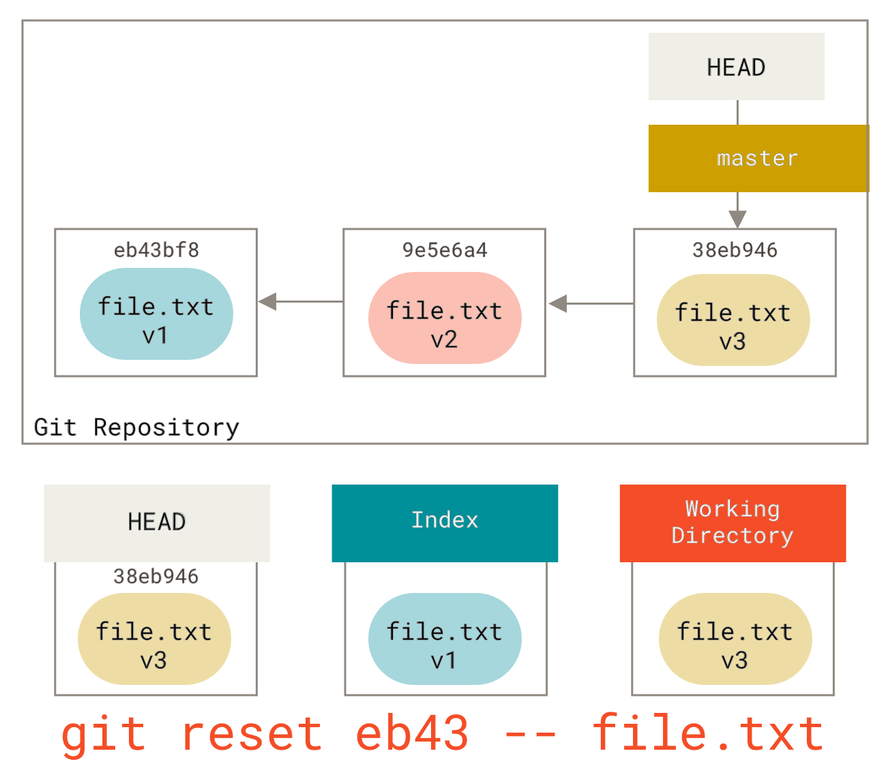
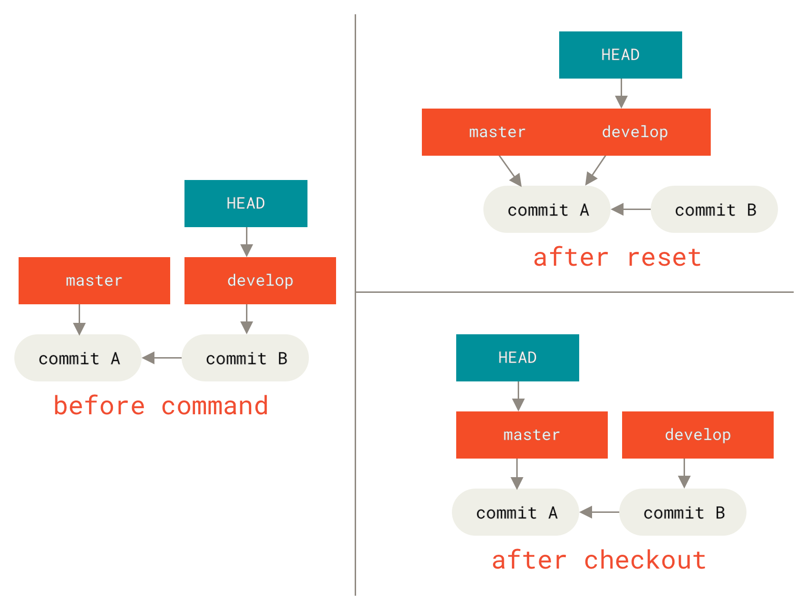
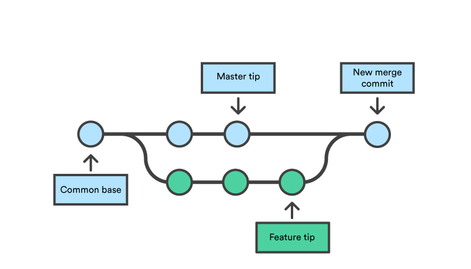
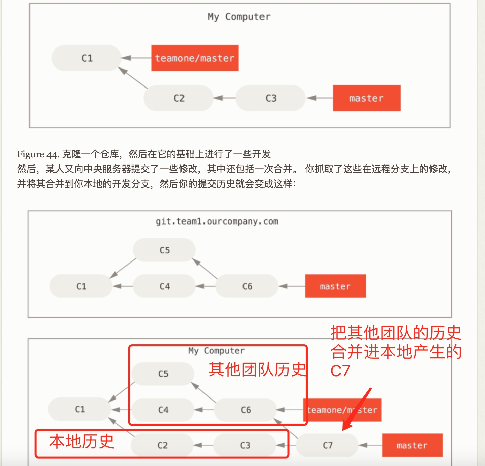
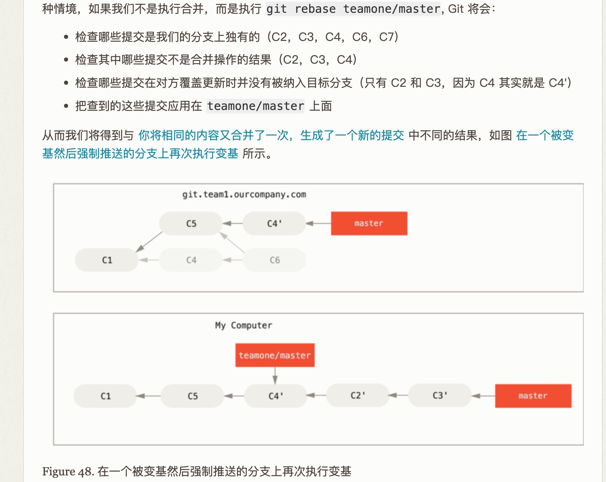
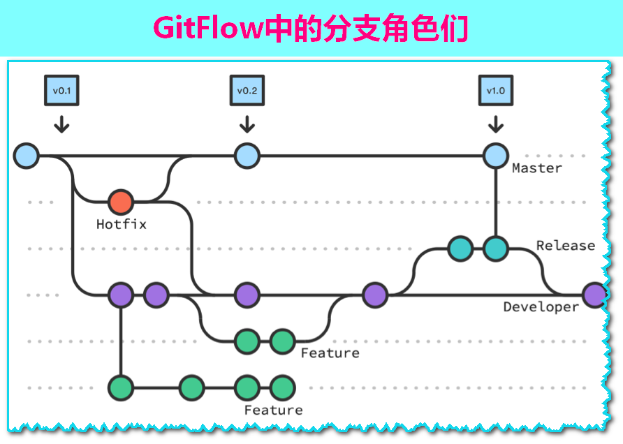
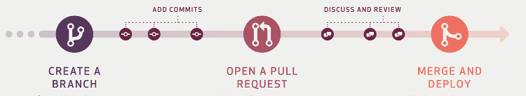
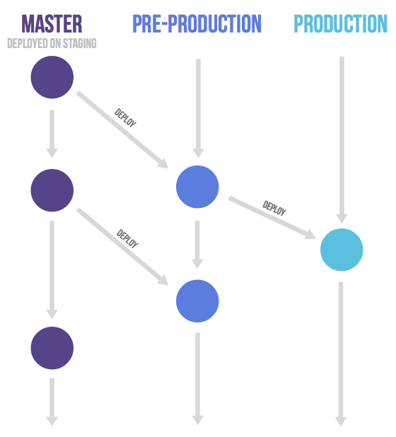
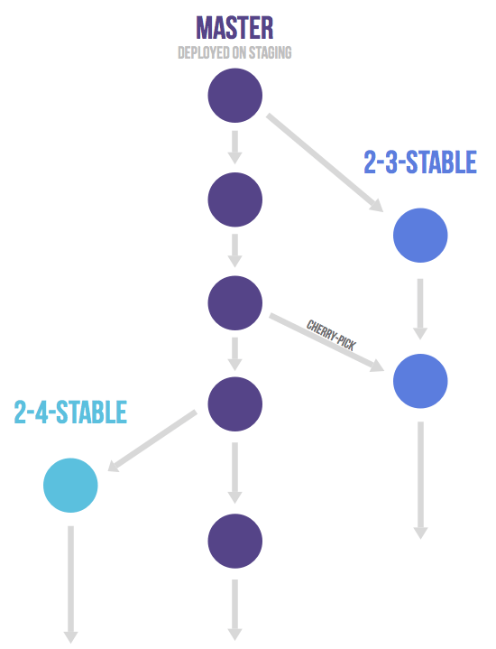

git 难点知识汇总

初始化命令
配置用户、remote 和 branch
1 | |
凭空产生空的 git repo
1 | |
变换remote repo
1 | |
把已经存在的 repo push 上 remote
1 | |
areas
-
已修改表示修改了文件，但还没保存到数据库中。
-
已暂存表示对一个已修改文件的当前版本做了标记，使之包含在下次提交的快照中。
-
已提交表示数据已经安全地保存在本地数据库中。

staging area 也叫 index。add 就是把文件 index/staging 的过程。git 里经常混用 index 这个单词。
git 的这些区域都存在于 .git 文件夹下。用 clone 命令得到远端仓库的文件是得到远端仓库的每一个版本，不会遗漏。所以除了server hook 以外，仓库可以这样被保存和重建。git 是 version-based 的 cvs，而不是 delta based 的 cvs，在实际使用过程中也相当轻量级。
如果加上 untracked，则 area 有四种，而且最后一种 unmodified 被放在中间：

Working Directory = Working Tree，指你当前正在工作的文件系统目录，其中包含了你正在处理的项目的文件。这些文件可以是未跟踪的、已跟踪的、已修改的或未修改的。
- Untracked files: 被修改，但不是 Modified 的文件（modified 状态只存在于 tracked 文件中。这是因为只有 Git 已经在跟踪的文件，才能被检测到是否发生了修改。）。
- 被忽略的文件 是通过 .gitignore 文件显式指定的，不会被 Git 跟踪。
- 未跟踪文件 是尚未被 Git 跟踪的文件，会出现在 git status 输出中，除非被添加到 .gitignore 文件中。
- Tracked files：在 index 或者在 history 里的文件，git 会一直跟踪它们的修改。
git worktree 命令允许你在同一个 Git 仓库中创建多个工作树（worktrees）。每个工作树可以独立地检出不同的分支或提交，这使得你可以在同一个仓库的不同分支上并行工作，而无需频繁地切换分支。
分支
HEAD 指向的 commit，是当前分支的顶端，哪怕这个 commit 后面还有很多其他 commit-也就是说一个分支并不是一个链表的终点，分支后续还可能有分支，但是分支是自己这个链表的 last commit 的 alias，然后 HEAD 是这个 alias 的 alias。
所以新创建分支的时候 HEAD 还在当前分支上。

但切换分支后 HEAD 指向的是新分支了。

HEAD = current checkout lastest commit，不是未提交的变更，也不是倒数第几个变更，也不是当前提交链条上的最远 commit，也不必然是 branch（所以在 rebase 之类的操作过程中，HEAD 会移动，会移动到某个没有 branch alias 的 commit 上方）。在 checkout branch 的时候，等于 branch lastest commit。HEAD 分支随着提交操作自动向前移动。在分支之间切换，你需要的命令只有 branch、checkout 和 commit。
修改提交
查看历史
普通的历史
用git log可以查看提交历史，以便确定要回退到哪个版本。
只有本地才能看到的历史
要重返未来，用git reflog 查看命令历史，以便确定要回到未来的哪个版本。这个命令的本质，是阅读“每当你的 HEAD 所指向的位置发生了变化，Git 就会将这个信息存储到引用日志这个历史记录里”的历史。
所以看到就是一系列 HEAD 列表：HEAD@{0}、HEAD@{1}，内部有checkout/rebase/commit。
关于 log 有一个复杂的用法解释，可以让我们看到我们平时使用的ui底层是怎样仅基于log和reflog命令就查看一个/多个分支的多时间区间/多点提交记录的。
1 | |
这里面有一句话值得铭记：
将引用日志想作 Git 版的 shell 历史记录
如果你有 UNIX 或者 Linux 的背景，不妨将引用日志想作 Git 版的 shell 历史记录， 重点在于仅与你和你的会话相关，而与他人无关。
这句话的隐藏含义是，reflog 不会被 push 到远端，只有本地 repo 才留存。这个日志能够帮助修复那些 reset 导致的丢失，log（实际上是 commit log）是会被修改的，reflog 记录了 HEAD 的变动历史，而不只是 commit log。
另一种双点
b7ba61b5..ecee4f91 main -> origin/main
git pull让 main 从 b7ba61b5 进展到 ecee4f91，而这一更新来自 origin/main。
reset
三个选项的区别是：是否调整 HEAD 与 branch、丢掉 staging area 的修改、丢掉 Working Directory 的修改。回退：commit（相当于 branch）、add、modified 这三个最重要的操作（这个三部曲正向也叫做 edit，stage，commit）。
大多数的时候的回退操作是 reset 操作：
大部分情况下，我们可以使用git reset --hard commit_id（这里的commit id 也可以是某种 ref，比如分支名 origin/main） 的方式来调整当前整个 git 仓库内的内容，这个操作会把代码仓库里的多余内容抹掉。**git reset --hard大部分时间没什么用，因为 HEAD 本来已经是 HEAD 了，但它会把 Working Directory 里的内容给丢掉。**这个操作是最危险的，其他reset都可以再调整，这个操作会丢失数据。git reset --hard HEAD~对于错误的merge有撤销的功能，缺点是会重写历史，这对 public 分支是有害的。
如果我们想把代码回滚到特定的版本，但保留 commit 之间的修改，则可以使用git -c core.quotepath=false -c log.showSignature=false reset --soft 6ef50b9f2186fbb0f89b100dfe7399c2b918446d 命令，这样特定版本之间的修改，会停留在 staged 区域，等待再次被修改为一个 commit 并提交。同样是保留文件修改，soft 会帮你做好 add 动作。git reset --soft HEAD~2会把最近2次 commit 都放在 index 里，这样我们一次 commit 就压缩了这2次 commit。
git -c core.quotepath=false -c log.showSignature=false reset --mixed 6ef50b9f2186fbb0f89b100dfe7399c2b918446d，则 commit 之间的代码会被放到 Working Directory（而不是 staging area），等待 add 和 commit。同样是保留文件修改，mixed 连 add 都不会帮你做。而且，它是 reset 的默认选项。
等价于：
1 | |
git -c core.quotepath=false -c log.showSignature=false reset --keep 6ef50b9f2186fbb0f89b100dfe7399c2b918446d 看不出这个命令和hard有什么区别。
reset 命令会以特定的顺序重写这三个区域（WD是扁平的文件区域、index是 .git 目录下的一个缓冲文件，branch 的 heads/ref（注意小写 heads）的引用的指针指向 ），在你指定以下选项时停止：
- branch 是一定会被重写的（被拿走的修改在其他区域里（WD、index）取决于不同选项）
- 移动 HEAD 的指向 （若指定了 --soft，则只把 HEAD 在 commit 的树对象链表的位置移动了。变更留在 index 和 WD 里，也就意味着这是一次已经有了快照的等待提交的commit，只要再次提交就会得到新的 commit，不再需要 add。这时候再次提交就只能主要修改提交消息，也就起到了 --amend 类似的作用）

- 使索引看起来像 HEAD （若未指定 --hard，即指定了 mix，则 idex 也被抹去，变更留在 WD 里，所以这是取消了 commit 和 add）

- 使工作目录看起来像索引（若指定了 --hard，丢弃一切变更）

上面的图还有一个特点，在正常情况下，三个区域是逐次增加和逐次回退的。v3 覆写 v2 是从右到左；而 v2 覆写 v3，则是先从链表里面用 HEAD 的父节点 HEAD~ 来覆写 HEAD，再从 HEAD 往右覆写。
有一个衍生操作：想让文件从 index 里回到 WD 怎么办？
1 | |


强制对齐远程分支
有些 git pull 会产生多余的垃圾代码，这时候可以使用强制更新来去除 WIP，而且对齐远端。
1 | |
checkout

- checkout 创造了一种只移动 HEAD 但 branch 纹丝不动的操作。
- reset 移动了branch，也移动了 HEAD。
git checkout最简单的用法，显示工作区，暂存区和 HEAD 的差异。
注意 checkout 本身不是 reset，纯粹的 checkout 会导致 HEAD 指针比 branch 的最后头指针更加 behind（因为 checkout 始终都是往已有的历史里 checkout）。因为 HEAD 等于 current checkout commit 的定义，凡是不是 latest 的 commit，HEAD 都会因此进入 detached HEAD STATE。因为 checkout 本来是拿来移动 HEAD 的，HEAD 不指向 branch 的时候就是 detached。
我们在 detached HEAD 上乱修改，也可以产生提交。但这个提交是不能当做任何一个 branch 的内容的，也就是在一个匿名的 branch 内。但我们可以再做一次checkout -b，新建出真正的分支（还有一个不常用的简写操作git checkout --track origin/serverfix）。大多数时候我们会忘记这样给匿名分支命名，因为我们回溯到某些checkout 的时候往往是我们 rebase 的时候，这时候我们想着的不是给旧分支分叉，而是想办法把旧分支的内容修改为我们想要的某些版本。
似乎可以这么理解，git checkout 历史版本，是为了在历史版本上创建新分支而不是更正当前版本而存在的。如果不是rebase而进入这些commit，系统进入悬垂态是必须要解决的。
因为 checkout 总是被用来切换分支，所以它会导致 local modification 被覆盖，所以我们在 checkout 的时候，总是要先 commit 或者 stash 一下我们的修改。
对分支
首先不同于 reset --hard，checkout（一个分支） 对工作目录是安全的，它会通过检查来确保不会将已更改的文件弄丢（在某些工具里会有 smart checkout 和 force checkout 的区别）。 其实它还更聪明一些。它会在工作目录中先试着简单合并一下，这样所有 还未修改过的文件都会被更新。 而 reset --hard 则会不做检查就全面地替换所有东西。
第二个重要的区别是 checkout 如何更新 HEAD。 reset 会移动 HEAD 分支的指向，而 checkout 只会移动 HEAD 自身来指向另一个分支。
对文件
运行 checkout 的另一种方式就是指定一个文件路径，这（会像 reset 一样？）不会移动 HEAD。 它就像 git reset [branch] file 那样用该次提交（该分支的 last commit）中的那个文件来更新索引，但是它也会覆盖工作目录中对应的文件。 它就像是 git reset --hard [branch] file（如果 reset 允许你这样运行的话）， 这样对工作目录并不安全，它也不会移动 HEAD。
1 | |
对于 staged 文件来讲，checkout；对于 commit 的文件来讲，reset --hard。在git里，checkout意味着 Working Directory 的重置。checkout后面可以接的有文件名、commit 和分支名（实际上和commit一样都是一个版本快照的hash指针）。

reset会把分支这种类似 alias 的内容也给改了。在git的术语里，reset will move the branch HEAD points to, checkout moves HEAD itself。reset 也因此可以起到修复分支的作用，而我们平时checkout是为了修复 WD 中的某些 path。checkout 比较轻量级。
revert
1 | |
产生一个反 commit。这样可以提交反操作，而不丢失正操作的 commit。这样做的好处是，commit 历史是 append only 的，不会被修改。
在这里要重新解释三个区域：
| 区域 | 用途 |
|---|---|
| HEAD | 某个 commit heads/ref（branch）的别名，所以可以在不同 branch之间移动：提交会自动移动 HEAD，上一次提交的快照，下一次提交的父节点。 |
| Index（staging area） | 扁平文件：预期的下一次提交的快照，生成树对象的源泉，write-tree从这里把变更生成树对象，commit-tree 再（不从这里）把树对象提交乘 commit 对象。有人把这个地方叫 index tree（不如 working tree 流行），这个叫法似乎是错的 |
| Working Directory（WD） | 沙盒，平凡文件系统。有些文献把这个地方叫 working tree |
运行 git status 会没有输出，意味着三棵树变得相同了。
revert 可以把2个分支的 merge 只 revert 一半：
git revert -m 1 HEAD
[master b1d8379] Revert “Merge branch ‘topic’”
-m 1 标记指出 “mainline” 需要被保留下来的父节点。 当你引入一个合并到 HEAD（git merge topic），新提交有两个父节点：第一个是 HEAD（C6），第二个是将要合并入分支的最新提交（C4）。 在本例中，我们想要撤消所有由父节点 #2（C4）合并引入的修改，同时保留从父节点 #1（C6）开始的所有内容。
1 是指 #1

新的提交 ^M 与 C6 有完全一样的内容，所以从这儿开始就像合并从未发生过，除了“现在还没合并”的提交依然在 HEAD 的历史中。 如果你尝试再次合并 topic 到 master Git 会感到困惑：
git merge topic
Already up-to-date.
amend
我们的 amend 主要是用（修改过 message 和 文件） commit2 来代替 commit1：
1 | |
restore
对于误删除的文件：
1 | |
主要命令
merge
merge 的用途是把一个分支的内容合入另一个分支。
要把 master 的代码合并入 feature。
1 | |
非快进合并
git merge 通常会产生一个多余的 commit，而且如果有冲突的话，还必须在这个 commit 里修改，化解冲突。我们在工程上倒是可以规定所有的 merge 都必须是 no conflict 的，这就要求我们合并里的 source 分支，反而要先 merge target 分支。

这种非快进合并按照 mergify 的说法，应该也叫做 three-way merges（the current main branch, your commits to be merged, and a common ancestor of the two）。

这里的 tip 是尖端的意思。
快进合并
快进合并即 Fast-forward merge，是一种特殊的合并方式，用于将一个分支的提交直接应用到另一个分支，而不会创建一个新的合并提交-效果如果 rebase。如分支 a 有c1c2c3提交，分支 b 有c1c2c3c4c5提交，checkout a 然后 merge b，就是把 a 指向 b。ff 只会发生在 a 是 b 的子集前提下，这样3-way就变成2-way。
这种合并会让我们删除分支 b 以后，会看不到分支 b 的痕迹，因为分支信息作为非必须信息，没有被保留。
配置快进
1 | |
- true（默认值）：允许快进合并。
- false：禁止快进合并，总是创建一个新的合并提交。
- only：只允许快进合并，如果不能进行快进合并，则拒绝相应操作。
压缩合并
1 | |
rebase
本节最重要的标准流程是应该是 feature rebase onto master，然后 master merge from feature。
git rebase/merge master 的宾语都是 master，都是基于，但基底分支是feature/master。从句式来看，这是 merge from 和 rebase onto 的区别。
rebase 的用途也是把一个分支的内容合入另一个分支。作为 merge 的替代选择，它会产生一个非常整洁的提交记录。让本来并行的开发记录看起来像是串行的一样。
变基的主流程是：
- 先找到共同祖先。
- 再找到基底分支和当前分支的全部提交。
- 将当前分支的提交逐步应用到基地分支上去。
1 | |
rebase 的本质，顾名思义，是改变当前分支的 branch out 的位置。即，把当前 feature 整个移动到 master 的 ALIAS 之后（尽量不 branch out），即所谓的 rebase onto。
我们可以看看最基础的分支演进图：

最简单的操作就是 merge，我们把这个叫做
The easiest way to integrate the branches, as we’ve already covered, is the merge command.

rebase 导致最后的项目历史呈现出完美的线性——你可以从项目终点到起点浏览而不需要任何的 fork。这时候我们的 experiment 分支变成直线了。

但我们这里 rebase 的当前分支是experiment，是为了 master 更好地 merge 而服务的，而不是让 master rebase onto experiment。

这个故事的完整操作是：
git checkout experiment
git rebase master
First, rewinding head to replay your work on top of it…
Applying: added staged command git
checkout master
git merge experiment
rebase 因为会修改 branch 的历史，所以 never use it on public branches，use it on experiment branch。因为这会给其他人的开发分支带来分歧。
而如果我们使用交互式的 rebase，就是把git rebase -i master，则允许我们把要 branch out 的 commit 做一个整理。
强制推送会毁灭推送历史
如果你想把 rebase 之后的 master 分支推送到远程仓库，Git 会阻止你这么做，因为两个分支包含冲突。但你可以传入 --force 标记来强行推送。就像下面一样：
1 | |
它会重写远程的 master 分支来匹配你仓库中 rebase 之后的 master 分支，对于团队中其他成员来说这看上去很诡异。所以，务必小心这个命令，只有当你知道你在做什么的时候再使用。如果提交存在于你的仓库之外，而别人可能基于这些提交进行开发，那么不要执行变基。

这时候 team1 rebase 丢弃一些分支，就会产生意想不到的后果。


**变基只能让被变基的分支干净，也许能让master干净，但不会让以前pull过的分支干净。**我们会看到内容一样，作者和时间一样但 hash 不一样的提交，产生 no diff 式的困惑。
1 | |
这两种方法可以拉取被人rebase过的公共分支，而不丢失修改，而且不会产生重复的commit。而如果被 push --force的分支的外部 clone 者不这么做，则他们的历史里仍然有“无差别的重复分歧”。

所以要消除 divergence 就要gplr！
补丁式 onto（在三个分支上变基）
1 | |
这是一个三分支的变基操作。
以上命令的意思是：“取出 client 分支，找出它从 server 分支分歧之后的补丁， 然后把这些补丁在 master 分支上重放一遍，让 client 看起来像直接基于 master 修改一样”。
然后
1 | |


变基操作的实质是丢弃一些现有的提交（重复的提交存在于 server上，但因为重复来源于变基，所以是可以抛弃的），然后相应地新建一些内容一样但上 commit id 不同的提交。在变基后，所有的patch commit都变了，c3变成c3~，c4变成c4~，类似区块链，所以这会修改commit的 committer date，而保留 author date。
fetch
- git fetch 默认会拉取远程仓库（默认的 remote 是 origin，也可以选择其他remote，但一次只能拉取一个（通常是当前活动的 remote））的所有分支和标签的最新信息。这意味着它会获取远程仓库中所有分支的最新提交历史。
- 它会更新本地的远程跟踪分支。
- 如果本地原本没有全量的 origin/branch 列表，fetch 会拉取全部的列表
- 它不会自动合并或修改当前分支的工作目录。
- git pull 相当于
- git fetch 全部远程跟踪分支的提交（也就包括当前分支的 origin upstream，但只是这个分支，如果使用大仓+leflow模式每次就会拉取非常多的 commit）
- git merge 当前分支的 origin upstream
- git pull 相当于
- 你可以使用参数来指定特定的分支或标签进行拉取。
- idea 更新某个非当前分支的操作：
git fetch origin develop:develop --recurse-submodules=no --progress --prune
- idea 更新某个非当前分支的操作：
两个分支
master 是本地分支。
origin/master (远程跟踪分支)是远程 master 分支在你本地的缓存副本。这个副本不会自动更新，需要显式执行 git fetch 来更新。
1 | |
所以：
- 不要
git merge origin/master # 合并最新的远程变更 - 需要
git pull origin master # 相当于 fetch + merge
remote

Note that this repo is only considered to be the central one (since Git is a DVCS, there is no such thing as a central repo at a technical level)。
Git是一个分布式版本控制系统（DVCS），而之前的系统大多是集中式的。分布式模型允许每个开发者拥有完整的代码库副本，这为轻量级分支和合并提供了基础。
在Git之前，版本控制系统的设计更多地关注于集中式管理和简单的线性开发模型。随着开源项目和分布式团队的兴起，对更灵活的分支和合并需求变得更加迫切。
Technically, this means nothing more than that Alice has defined a Git remote, named bob, pointing to Bob’s repository, and vice versa.
1 | |
git fetch origin 在本地生成一个远程分支 origin/serverfix，指向服务器的 serverfix 分支的引用。这是一个指针，而不是可编辑的副本（拷贝），除非使用 checkout -b 的方式。
commit
1 | |
rm
1 | |
（命令）别名
在创建你认为应该存在的命令时这个技术会很有用。 例如，为了解决取消暂存文件的易用性问题，可以向 Git 中添加你自己的取消暂存别名：
1 | |
这会使下面的两个命令等价：
1 | |
这个操作似乎不如在 shell 里面 alias 统一。
特殊技巧
交互式提交
1 | |
其中update是暂存整个文件，patch是暂存其他几行。
只 staged 几个文件的结果就是
Update>>
updated 2 paths
updated path 意味着暂存了几个文件。
具体的例子见7.2 Git 工具 - 交互式暂存。
储藏
在 git 术语里，暂存（stage）和储藏（stash）有很大不同。
git stash 大致上等于 git stash push。按顺序压入栈。
1 | |
这里的 WIP 是 work in progress 的意思，有编号意味着可以从命令里引用。
1 | |
--index意味着，staging 的状态也会被 stash 起来，而不是在pop的时候变成 unstaging 状态。
1 | |
Stash 高级用法
1 | |
Stash 最佳实践
- 总是添加描述信息：使用
-m参数为 stash 添加有意义的描述,方便后续识别 - 定期清理：使用
git stash clear或git stash drop清理不再需要的 stash - 使用 --index：如果你需要保留暂存区的状态,使用
--index选项 - 避免过度使用：stash 是临时解决方案,如果修改很重要,应该创建分支而不是 stash
怎样把一些 commit 从当前分支（通常是 master）移到另一个分支
1 | |
怎样把当前分支的提交直接复制到其他分支
一共有三类补丁操作 cherry-pick/rebase（git rebase 命令基本是是一个自动化的 cherry-pick 命令。 它计算出一系列的提交，然后再以它们在其他地方以同样的顺序一个一个的 cherry-picks 出它们）/revert（git revert 命令本质上就是一个逆向的 git cherry-pick 操作）
1 | |
基于某一个分支压缩本分支上的修改
1 | |
这里面涉及两个参数，–preserve-merges和–rebase-merges。在较新版本的 Git 中，–preserve-merges 已经被标记为弃用，并且在未来的版本中可能会被移除。
Git 官方推荐使用 --rebase-merges 来替代它。--rebase-merges可以与--interactive 结合使用。
怎样彻头彻尾地 ignore 不需要的文件（但仍把它保留在 WD 里）
参考gitignore.io。
- Edit .gitignore to match the file you want to ignore
git rm --cached /path/to/file，用于从暂存区（index）中移除文件，但保留在工作目录（working directory）中。这意味着文件将不再被 Git 跟踪，但仍然存在于你的文件系统中。
处理经典的双提交冲突
问题：
On branch main Your branch and ‘origin/main’ have diverged, and have 1
and 3 different commits each, respectively. (use “git pull” to merge
the remote branch into yours)nothing to commit, working tree clean
一般的冲突文件格式是：
1 | |
a merge b 遇到冲突，下方就是b的文件，而上方是 a 的文件。
这时候如果直接 git pull 的话，fast forward 有一定概率会失败，需要进入git pull --rebase 的模式，基于 rebase 进行拉取。
然后
1 | |
稀疏检出
1 | |
这样会产生这样的 .git/info/sparse-checkout
1 | |
配置了稀疏检出 (sparse checkout) 之后，git fetch的行为在拉取 commit 和 commit 历史方面，与没有配置稀疏检出时基本没有区别。
git fetch仍然会拉取：
- 所有被请求的引用 (references) 的更新: 例如，如果你
git fetch origin main，它会更新你本地的 origin/main 远程跟踪分支，使其指向远程仓库 origin 上 main 分支最新的 commit。 如果你git fetch origin --all，它会更新所有远程分支和标签的远程跟踪分支。 - 所有为了完成这些引用更新所需要的 commit 和对象 (objects): 为了更新远程跟踪分支，git fetch 需要下载远程仓库中新的 commit 对象、tree 对象、blob 对象等。 它会拉取从你本地仓库已知的 commit 历史到远程仓库最新 commit 之间 所有 的 commit 和对象。
- 关键点：稀疏检出不影响`git fetch拉取 commit 和历史的行为。
稀疏检出只影响：
- 你的工作目录 (Working Directory) 的内容: 配置稀疏检出后，Git 只会在你的工作目录中检出和维护你指定的文件和目录。 工作目录中只会显示
sparse checkout配置中包含的文件和目录。 git checkout和git reset --hard等命令的行为: 当你使用git checkout切换分支或commit，或者使用git reset --hard重置工作目录时，Git 会根据sparse checkout配置来决定哪些文件需要检出到工作目录。
关于文件大小的辨析
- git 的 commit 里包含完整的文件的各个版本的 blob，所以拉取完整的 git history 意味着稀疏检出和非稀疏检出的 .git 文件夹大小是一样大的。
- 为什么还要下载所有对象：
- 保持历史完整性：允许在需要时访问完整历史。
- 支持灵活性：可以随时更改稀疏检出规则，而无需重新下载数据。
- 确保操作一致性：像 merge、rebase 等操作需要访问完整的仓库状态。
- 稀疏检出会让 Working Directory 变小：
- 磁盘空间：虽然所有对象都被下载，但工作目录中只有符合稀疏检出规则的文件被实际检出。在大型仓库中，这可能会显著减少工作目录的大小。
- 网络带宽：初次克隆时仍需下载所有对象，但后续的 fetch 和 pull 操作可能会更高效，因为 Git 可以更智能地处理稀疏检出的情况。
- 计算资源：Git 的某些操作（如 status）可以更快，因为它们只需要考虑检出的文件。
Shallow Clone（浅克隆）
Git 有一些额外的优化，如部分克隆（partial clone），可以进一步减少初始下载的数据量。
- 定义：只克隆仓库的最近一次提交历史，而不是完整的提交历史。
- 特点：
- 通过 --depth 参数指定克隆的深度，例如 git clone --depth 1 <仓库地址> 只克隆最近一次提交。
- 适用于不需要完整历史记录的场景，可以显著减少克隆时间和存储空间。
- 无法查看或操作克隆深度之外的提交历史。
- 适用场景：
- 快速获取最新代码。
- CI/CD 构建环境中，不需要完整历史记录。
partial clone
- 定义：只克隆仓库的部分内容，例如只克隆某些分支、目录或文件。
- 特点：
- 通过 --filter 参数实现，例如 git clone --filter=blob:none <仓库地址>
- 只克隆元数据，不下载文件内容。
- 文件内容在需要时按需下载（称为 “lazy fetch”）。
- 适用于大型仓库，可以减少初始克隆的时间和存储空间。
- 适用场景：
- 大型仓库中只关注部分内容。
- 需要按需加载文件的场景。
文件系统优化
btrfs 和 overlayfs 可以加速 git clone。
如果对机器进行内存标签负载均衡，可以降低构建耗时。
使用git调试
git diff 的输出
1 | |
这段 Git 输出是使用 git diff 命令生成的，它显示了文件 hello.rb 在版本控制中的不同版本之间的差异。这里的输出显示了一个合并冲突（merge conflict），这通常发生在尝试合并两个分支时，如果两个分支在相同的文件的相同部分有冲突的更改。
下面是输出的逐行解释：
diff --cc hello.rb：这是 Git 使用的颜色冲突（cc）diff 格式，用于显示文件 hello.rb 中的合并冲突。index 0399cd5,59727f0..0000000：这行显示了冲突发生时的索引状态。0399cd5 和 59727f0 是冲突发生前两个不同版本的 SHA-1 哈希值，而 0000000 表示当前工作区的版本-0000000 通常表示一个合并冲突的状态。在这种情况下，它并不代表一个实际的提交哈希，而是一个占位符，表示当前文件处于未解决的冲突状态-在 Git 中，0000000 是一个特殊的哈希值，表示空对象或不存在的对象。--- a/hello.rb：这表示冲突发生前的一个版本-旧版本。+++ b/hello.rb：这表示当前工作区中的版本-新版本。@@@ -1,7 -1,7 +1,11 @@@：这是 diff 的统一格式，显示了冲突发生的位置。-1,7 表示在旧版本中从第1行到第7行，-1,7 表示在新版本（另一个合并分支）中也是从第1行到第7行，+1,11 表示在当前工作区中从第1行到第11行。- 符号表示旧版本中的行范围。+ 符号表示**新版本（当前工作区）**中的行范围。在合并冲突的情况下，Git 会在文件中插入冲突标记，这些标记会导致行数增加。因此，合并后的行数（+1,11）通常大于或等于原始行数（-1,7 和 -1,7），因为冲突标记占用了额外的行。#! /usr/bin/env ruby：这是 Ruby 脚本的 shebang 行，告诉系统这个文件应该用 Ruby 来执行。def hello：这是 Ruby 方法的定义。+<<<<<<< HEAD：这是 Git 合并冲突的标记（marker），表示接下来的代码块是 HEAD（当前分支）中的版本。+ puts 'hola world'：这是 HEAD 分支中的代码，打印 “hola world”。+=======：这是 Git 合并冲突的分隔符，表示接下来的代码块是另一个分支中的版本。+ puts 'hello mundo'：这是另一个分支中的代码，打印 “hello mundo”。+>>>>>>> mundo：这是 Git 合并冲突的结尾标记，表示另一个分支的代码块结束。end：这是 Ruby 方法的结束。
在正常合并的情况下，顶部（<<<<<<<）显示您的本地更改，而底部（>>>>>>>）显示项目上游所做的更改。当在尝试重新定基期间发生冲突时，顶部将显示您的上游更改，而底部显示主题分支更改。
要解决这个合并冲突，你需要决定保留哪个版本的代码，或者合并两个版本的代码。一旦你解决了冲突，你需要使用 git add 命令来标记文件为已解决，然后可以继续合并操作或者提交更改。
文件标注（类似idea里的annotate，或者我们常说的 blame）
元数据的三大要素：作者、时间和提交hash。
1 | |
搜索
1 | |
二分查找
1 | |
Bisect 高级用法和最佳实践
1 | |
Bisect 最佳实践
- 编写可靠的测试脚本：确保测试脚本能够准确判断当前版本是否有问题
- 标记好的起始点：选择一个确定没有问题的版本作为 good 标记点
- 跳过无法测试的提交：遇到编译失败或其他无法测试的情况,使用
git bisect skip - 使用可视化工具：使用
git bisect visualize查看当前搜索进度 - 及时记录：找到问题提交后,立即记录并分析问题原因
工作流
本文一部分也参考《Git之GitFlow工作流 | Gitflow Workflow（万字整理，已是最详）》、《一文弄懂 Gitflow、Github flow、Gitlab flow 的工作流》。
git 的横空出世改变了人们对分支和合并的想法。在其他工具里，分支和合并在工具书的最后一章，像要咬人一样。而 git 则把分支和合并放在第三章，因为这些操作非常廉价：
- Git的分支是非常轻量级的，因为它们本质上只是指向提交对象的指针。这使得创建和删除分支非常快速且占用资源少。
- 在Git中，分支操作几乎是瞬时的，不需要复制文件或目录。
相比之下：
- CVS的分支和合并操作相对复杂且容易出错，因为它依赖于文件锁和手动合并。
- SVN的分支是通过复制整个目录结构实现的，这使得分支操作相对笨重。虽然SVN改进了合并支持（如合并信息记录），但合并过程仍然可能涉及大量手动干预。
- Perforce的分支模型较为复杂，通常需要更多的配置和管理。合并操作可能涉及复杂的工作流和权限管理。
Git really changed the way developers think of merging and
branching。git 提倡本地分支，git 提倡分支间合并。For example, in CVS/Subversion books,
branching and merging is first discussed in the later chapters (for
advanced users), while in every Git book, it’s already covered in
chapter 3 (basics).
常见的工作流都是流水的形式，比喻项目像水流那样，顺畅、自然地向前流动，不会发生冲击、对撞、甚至漩涡，而且都采用”功能驱动式开发”（Feature-driven development，简称FDD）。

master 通常落后于其他分支，分支的滞后意味着稳定（稳定的代价就是落后）。

GitFlow
互联网企业的 GitFlow 工作流的起源在《A successful Git branching model》。我们应该为了多版本同时开发、并存、更新而使用这个模型，如果像web发布一样使用发布代替回滚，则不需要这个模型（这个模式是基于”版本发布”的，目标是一段时间以后产出一个新版本。但是，很多网站项目是”持续发布”，代码一有变动，就部署一次。这时，master分支和develop分支的差别不大，没必要维护两个长期分支。）。
这个模型诞生于2010年，距今已逾十载，而Git本身诞生的时间也不过稍早一些。在这十年间，git-flow（本文所述的分支模型）在众多软件团队中广受欢迎，甚至被视为某种标准——可惜的是，有些人将其奉为圭臬或万灵药。
这十年里，Git如旋风般席卷全球，而在我所处的圈子里，使用Git开发的软件类型也逐渐偏向网络应用。这类应用通常采用持续交付模式，很少回滚，也无需支持多个版本同时运行。
这与我十年前撰文时所设想的软件类型大相径庭。如果你的团队正在进行软件的持续交付，我建议采用更为简洁的工作流程（如GitHub flow），而非勉强将git-flow硬塞进你的团队。
然而，如果你正在开发需要明确版本的软件，或者需要同时支持多个版本，那么git-flow或许仍然是最适合你团队的选择，就像过去十年里它帮助过无数开发者一样。若是如此，请继续阅读下文。
最后，请始终牢记：世上没有包治百病的良方。审视你自身的处境，保持开放的心态，做出自己的判断。

develop 是 feature 分支的起源，release 分支是 develop 到 master 的缓冲。feature 在合并以前都是半成品，branch out 隔离了两条主干。

| 分支名称 | 分支说明 |
|---|---|
| Production | 生产分支，即 Master分支。只能从其他分支合并，不能直接修改 |
| Release | 发布分支，基于 Develop 分支创建，待发布完成后合并到 Develop 和 Production 分支去 |
| Develop | 主开发分支，包含所有要发布到下一个 Release 的代码，该分支主要合并其他分支内容 |
| Feature | 新功能分支，基于 Develop 分支创建，开发新功能，待开发完毕合并至 Develop 分支 |
| Hotfix | 修复分支，基于 Production 分支创建，待修复完成后合并到 Develop 和 Production 分支去，同时在 Master 上打一个tag |
分支
主分支

The central repo holds two main branches with an infinite lifetime:
- master-用于生产发布的分支
- develop-用于集成构建的分支，这个分支是最繁忙的分支，从 master拉取，所有其他分支都往她这里 merge back，而且除了 hotfix，全部分支都 branch off 这个分支。hotfix 不从 develop 拉取是因为 develop 拥有未经验证的 feature。
这两个分支最好永远处于可编译、可运行状态。develop分支将包含项目的所有历史，而master会是一个缩减版本。
We consider origin/master to be the main branch where the source code of HEAD always reflects a production-ready state.我们认为origin/master主分支中的源代码 HEAD始终反映出可用于生产的状态。
任何人不允许在主要分支上进行代码的直接提交，只接受其他分支的合入。原则上主要分支上的代码必须是合并自经过多轮测试及已经发布一段时间且线上稳定的预发分支。master 分支只存放历史发布(release)版本的源代码。即用于存放对外发布的版本，任何时候在这个分支获取到的都是稳定的已发布的版本。各个版本通过 tag 来标记。
We consider origin/develop to be the main branch where the source code of HEAD always reflects a state with the latest delivered development changes for the next release. 我们认为origin/develop这是主分支，其中的源代码 HEAD始终反映出为下一版本提供的最新开发更改的状态。有些人称之为“集成分支”。任何自动夜间构建都是从这里构建的。
开发分支是主开发分支，其上更新的代码始终反映着下一个发布版本需要交付的新功能。当开发分支到达一个稳定的点并准备好发布时，应该从该点拉取一个预发分支并附上发布版本号。也有人称开发分支为集成分支，因为会基于该分支和持续集成工具做自动化的构建。
在有些方法论里，这两个分支是不能被主动修改，只应该被合并的，但有些示例里，有人在 develop 里做新的提交：

支持分支
Next to the main branches master and develop, our development model uses a variety of supporting branches to aid parallel development between team members, ease tracking of features, prepare for production releases and to assist in quickly fixing live production problems. Unlike the main branches, these branches always have a limited life time, since they will be removed eventually.
除了主分支 master 和 develop 之外，我们的开发模型还使用各种支持分支来帮助团队成员之间的并行开发、简化功能跟踪、为生产发布做准备并帮助快速修复实时生产问题。与主分支不同，这些分支的生命周期始终有限，因为它们最终将被删除。
- Feature branches
- Release branches
- Hotfix branches
Each of these branches have a specific purpose and are bound to strict rules as to which branches may be their originating branch and which branches must be their merge targets. 这些分支中的每一个都有特定的用途，并且必须遵守严格的规则，即哪些分支可以是它们的起源分支，哪些分支必须是它们的合并目标。
我们常见的对 gitflow 的错误使用是没有在 release 和 hotfix 上打标签的习惯，这让这两个分支的功能性减弱了很多。
他们的存在是为了解决特定的问题而进行的各种开发活动。与主分支不同，这些分支总是有有限的生命时间，都可删除。
特性分支
Feature branches (or sometimes called topic branches) are used to develop new features for the upcoming or a distant future release. When starting development of a feature, the target release in which this feature will be incorporated may well be unknown at that point. The essence of a feature branch is that it exists as long as the feature is in development, but will eventually be merged back into develop (to definitely add the new feature to the upcoming release) or discarded (in case of a disappointing experiment).功能分支（有时称为主题分支）用于为即将发布或遥远的未来版本开发新功能。开始开发某个功能时，该功能将包含在哪个目标版本中可能还不得而知。功能分支的本质是，只要该功能处于开发阶段，它就会存在，但最终会被合并回去 develop （以明确将新功能添加到即将发布的版本中）或丢弃（以防实验令人失望）。
Feature branches typically exist in developer repos only, not in origin.功能分支通常仅存在于开发人员存储库中，而不存在于origin。
May branch off from:
develop
Must merge back into:
develop
Branch naming convention:
anything except master, develop, release-*, or hotfix-*
开发团队大部分时候做的是从 master 直接拉取 feature，而标准的工作流是从某个特定的 tag 拉取 develop，然后从 develop 拉取 feature。
1 | |
在这里都是让 develop merge feature，而不是反过来，这样 develop 不会污染 feature，很多时候我们的 feature 是受其他 feature 的影响的，所以又有必要经常 merge from develop，这是这个地方被忽略的。
合并完就可以删除 feature 分支了，而不是发布以后。
使用 --no-ff 的好处
The --no-ff flag causes the merge to always create a new commit object, even if the merge could be performed with a fast-forward. This avoids losing information about the historical existence of a feature branch and groups together all commits that together added the feature. 该–no-ff标志使合并始终创建新的提交对象，即使合并可以通过快进执行。这避免了丢失有关功能分支历史存在的信息，并将所有共同添加该功能的提交分组在一起。比较：

在后一种情况下，无法从 Git 历史记录中看到哪些提交对象一起实现了某个功能 — 您必须手动读取所有日志消息。在后一种情况下，恢复整个功能（即一组提交）确实是一件令人头疼的事情，而如果 --no-ff使用该标志，则可以轻松完成。
是的，它会创建更多（空）的提交对象，但收益远远大于成本。
结论：如果单分支开发 merge，尽量快进合并-甚至使用 rebase；如果跨分支合并，在会删除feature的情况下，保留一个 merge commit 是好的-在回滚的时候尤其如此。
比较痛苦的是多个开发者使用同一个特性分支，这会产生大量的 merge commit：Merge branch 'feature/20241218_aaa' into feature/20241218_bbb。
假设有ab两个人往 origin 同一个分支开发：a 先 pull，得到一个 commit，消息是 Merge branch 'origin/feature/aaa' into feature/aaa，然后产生一个 merge commit，然后再 push 到 origin 的时候，另一个人再pull，就会产生另一个 commit，消息也是origin/feature/aaa' into feature/aaa，这里面的本地分支其实是不一样的，但在 origin 的 git log 里看不出来。
发布分支
在有的中文翻译里这是预发分支。
May branch off from:
develop
Must merge back into:
develop and master 可以往两个长期分支合并
Branch naming convention:
release-*
发布分支支持准备新的生产版本。它们允许在最后一刻进行细枝末节的完善。此外，它们还允许修复小错误并为版本准备元数据（版本号、构建日期等）。通过在发布分支上完成所有这些工作，该develop 分支就可以接收下一个大版本的功能。
bugfix 在release 上而不是在 feature 上是很多公司会忽略的事情，很多研发人员会直接在 feature 上 fix 而不是在 release 上 fix，这样 release 只是测试用，而合并回 master 的是 feature-这样就让 feature 对 master 的影响更大了。
从 develop 中生成（branch out）出新发布分支的关键时刻是当开发（几乎）反映了新发布所需的状态时。至少所有针对即将构建的发布的功能都必须在此时合并进 develop 。所有针对未来发布的功能可能不会合并 - 它们必须等到生成发布分支之后。
正是在发布分支开始时，即将发布的版本才会被分配一个版本号 — 而不是更早。在此之前，分支develop 反映了“下一个版本”的变化，但在发布分支启动之前，尚不清楚“下一个版本”最终会是 0.3 还是 1.0。该决定是在发布分支开始时做出的，并由项目的版本号提升规则执行。
1 | |
可以说 feature 的分支名带有功能名，而 release 分支带有版本号。
测试在 release 上做，fix 在 release 上做，merge 回 develop-为什么不merge 回 feature？因为feature 分支在上一步删除了。
release分支不是一个放正式发布产品的分支，你可以将它理解为“待发布”分支。
我们用这个分支干所有和发布有关的事情，比如：
- 把这个分支打包给测试人员测试
- 在这个分支里修复bug
- 编写发布文档
所以，在这个分支里面绝对不会添加新的特性。
当和发布相关的工作都完成后，release分支合并回develop和master分支。
单独搞一个release分支的好处是，当一个团队在做发布相关的工作时，另一个团队则可以接着开发下一版本的东西。
并行开发的精髓就在于并行 feature、release单独做版本，而且 merge back into develop（经常被人忽略）。但是并行开发的时候，发布是串行的，每次应该只有一个 release 版本的 develop 发布到 master，在 release 生成以后，在 release 发布完以前，应该冻结其他 release 的生成。
热修复分支
May branch off from:
master
Must merge back into:
develop and master 可以往两个长期分支合并
Branch naming convention:
hotfix-*
热修复分支与发布分支非常相似，因为它们也是为新生产版本做准备，尽管是计划外的。它们产生于对实时生产版本不良状态立即采取行动的必要性。当必须立即解决生产版本中的关键错误时，可以从标记生产版本的主分支上的相应标签中分支出热修复分支-从特定的标签中拉取分支是多版本可运行的管理方法，而现代的 web 开发使用前滚来代替回滚，总是从最新版本拉取hotfix和develop。
本质（essence）是团队成员（在develop分支上）的工作可以继续，而另一个人正在准备快速生产修复。

1 | |
hotfix 分支也是带有分支名的。
此处规则的一个例外是， 当当前存在发布分支时，修补程序更改需要合并到该发布分支，而不是develop。将错误修复合并到发布分支最终会导致 develop 在发布分支完成时将错误修复也合并到。如果develop立即需要此错误修复并且不能等待发布分支完成，现在您也可以安全地将错误修复合并到develop。
工具推荐
GitFlow 工具推荐 | 配套工具：这里面命令行和 SourceTree 可能启发了别的工具，比如腾讯的 leflow。
GitHubFlow

在以前，“fork”是一个贬义词，指的是某个人使开源项目向不同的方向发展，或者创建一个竞争项目，使得原项目的贡献者分裂。 在 GitHub，“fork”指的是你自己的空间中创建的项目副本，这个副本允许你以一种更开放的方式对其进行修改。
GitHubFlow 只有 master 和其他分支，合并都是通过 PR，不做任何隔离分支-这是大部分公司的最常见的工作模式。
- 派生一个项目
- 从 master 分支创建一个新分支
- 提交一些修改来改进项目
- 将这个分支推送到 GitHub 上
- 创建一个拉取请求
- 讨论，根据实际情况继续修改
- 项目的拥有者合并或关闭你的拉取请求
- 将更新后的 master 分支同步到你的派生中
Github flow 的最大优点就是简单，对于”持续发布”的产品，可以说是最合适的流程。
问题在于它的假设：master分支的更新与产品的发布是一致的。也就是说，master分支的最新代码，默认就是当前的线上代码。
可是，有些时候并非如此，代码合并进入master分支，并不代表它就能立刻发布。比如，苹果商店的APP提交审核以后，等一段时间才能上架。这时，如果还有新的代码提交，master分支就会与刚发布的版本不一致。另一个例子是，有些公司有发布窗口，只有指定时间才能发布，这也会导致线上版本落后于master分支。
上面这种情况，只有master一个主分支就不够用了。通常，你不得不在master分支以外，另外新建一个production分支跟踪线上版本。
merge request vs pull request
from gitlab’s perspective：
Merge or pull requests are created in a git management application and ask an assigned person to merge two branches. Tools such as GitHub and Bitbucket choose the name pull request since the first manual action would be to pull the feature branch. Tools such as GitLab and Gitorious choose the name merge request since that is the final action that is requested of the assignee. In this article we’ll refer to them as merge requests.
我们常说的维护者就是 assigned person。pull request 是命名自 first manual action（pull），而 merge request 则命名自 the final action that is requested of the assignee，本质上这都是 ask an assigned person to merge two branches。
但从实战来讲，pr 是从 fork repo merge 到 upstream repo，mr 则是在同一个 repo 里 merge。虽然这并不是这两个操作唯一的使用场景。我们可以在所有场景下使用 merge request，正如下面的例子一样：
In my point of view, they mean the same activity but from different perspectives:
Think about that, Alice makes some commits on repository A, which was forked from Bob’s repository B.
When Alice wants to “merge” her changes into B, she actually wants Bob to “pull” these changes from A.
Therefore, from Alice’s point of view, it is a “merge request”, while Bob views it as a “pull request”.
中文的解释：
很多人可能会问，提交代码通常是commit或者push，拉取代码才是pull，为什么GitHubFlow中提交代码提出的是“Pull
Request”。因为在GitHubFlow中，PR是通知其他人员到你的代码库去拉取代码至本地，然后由他们进行最终的提交，所以用“pull”而非“push”。
前面说过，Pull Request本质是一种对话机制，你可以在提交的时候，@相关人员或团队，引起他们的注意。
Gitlab flow
Gitlab flow 是 Git flow 与 GitHub flow 的结合。Gitlab flow 的最大原则叫做”上游优先”（upsteam first），即只存在一个主分支master，它是所有其他分支的”上游”。只有上游分支采纳的代码变化，才能应用到其他分支。

对于”持续发布”的项目，它建议在master分支以外，再建立不同的环境分支。比如，”开发环境”的分支是master，”预发环境”的分支是pre-production，”生产环境”的分支是production。
开发分支是预发分支的”上游”，预发分支又是生产分支的”上游”。代码的变化，必须由”上游”向”下游”发展。比如，生产环境出现了bug，这时就要新建一个功能分支，先把它合并到master，确认没有问题，再cherry-pick到pre-production，这一步也没有问题，才进入production。
只有紧急情况，才允许跳过上游，直接合并到下游分支。
Chromium项目就是一个例子，它明确规定，上游分支依次为：
- Linus Torvalds的分支
- 子系统（比如netdev）的分支
- 设备厂商（比如三星）的分支
版本发布

对于”版本发布”的项目，建议的做法是每一个稳定版本，都要从master分支拉出一个分支，比如2-3-stable、2-4-stable等等-在这里，待发布分支就类似版本 tag。
以后，只有修补bug，才允许将代码合并到这些分支，并且此时要更新小版本号。
搭建自己的服务端
github
service and hook
service
有许多可以选择的服务，大多数是整合到其他的商业与开源系统中。它们中的大多数是为了整合持续集成服务、BUG 与问题追踪系统、聊天室系统与文档系统。我们将会通过设置一个非常简单的例子来介绍。 如果从 “Add Service” 选择 “email”，会得到一个类似电子邮件服务配置的配置屏幕。
hook
如果需要做一些更具体的事，或者想要整合一个不在这个列表中的服务或站点，可以转而使用更通用的钩子系统。 GitHub 仓库钩子是非常简单的。 指定一个 URL 然后 GitHub 在任一期望的事件发生时就会发送一个 HTTP 请求到那个 URL 。
这里给的例子都使用 ruby 小框架 Sinatra 来写的。
1 | |
本地 Git Hooks 常见用法
Git hooks 存储在 .git/hooks/ 目录中,分为客户端 hooks 和服务端 hooks。客户端 hooks 在本地操作时触发,服务端 hooks 在服务器端操作时触发。
常用的客户端 Hooks
1. pre-commit（提交前）
- 在运行
git commit命令后,在获取提交消息之前触发 - 常用于代码风格检查、运行测试、检查文件大小等
- 如果返回非零退出码,提交将被中止
1 | |
2. commit-msg（提交消息）
- 在提交消息创建后触发
- 常用于验证提交消息格式是否符合规范
1 | |
3. pre-push（推送前）
- 在运行
git push命令后,但在实际推送之前触发 - 常用于运行完整的测试套件、检查是否包含敏感信息等
1 | |
4. post-merge（合并后）
- 在成功合并后触发
- 常用于更新依赖、清理缓存等
1 | |
Hooks 最佳实践
- 使用版本控制管理 hooks：将 hooks 脚本放在仓库的
.githooks/目录中,然后使用符号链接或配置指向它们 - 使 hooks 可执行：确保所有 hooks 脚本具有可执行权限 (
chmod +x) - 提供清晰的错误消息：当 hook 失败时,提供清晰的错误消息说明原因
- 不要阻塞太久：hooks 应该快速执行,避免影响开发体验
- 允许跳过 hooks：在必要时提供跳过 hooks 的选项 (如
git commit --no-verify) - 文档化 hooks：在 README 中说明项目使用的 hooks 及其用途
配置自定义 hooks 目录
1 | |
跳过 Hooks
在必要时,可以使用 --no-verify 选项跳过 hooks:
1 | |
注意：跳过 hooks 应该谨慎使用,仅在特殊情况下使用。
子模块
有种情况我们经常会遇到：某个工作中的项目需要包含并使用另一个项目。 也许是第三方库，或者你独立开发的，用于多个父项目的库。 现在问题来了：你想要把它们当做两个独立的项目，同时又想在一个项目中使用另一个。
我们举一个例子。 假设你正在开发一个网站然后创建了 Atom 订阅。 你决定使用一个库，而不是写自己的 Atom 生成代码。 你可能不得不通过 CPAN 安装或 Ruby gem 来包含共享库中的代码，或者将源代码直接拷贝到自己的项目中。
如果将这个库包含进来，那么无论用何种方式都很难定制它，部署则更加困难，因为你必须确保每一个客户端都包含该库。 如果将代码复制到自己的项目中，那么你做的任何自定义修改都会使合并上游的改动变得困难。
Git 通过子模块来解决这个问题。 子模块允许你将一个 Git 仓库作为另一个 Git 仓库的子目录。 它能让你将另一个仓库克隆到自己的项目中，同时还保持提交的独立-各提交各的，我不提交你的。
submodule像是源码级别的 lib，对他人项目的使用不是通过库链接，而是通过源码
1 | |
这会改写.gitmodules文件，内容通常是：
1 | |
这样产生的项目在一般的 clone 里是没有子模块内容，而空有目录的，需要执行以下命令：
1 | |
然后在子模块目录中运行git fetch和git merge origin/master
Worktree（多工作树）
Git 2.5+ 引入的 worktree 功能允许你在同一个仓库中同时检出多个分支到不同的工作目录。这对于需要同时在不同分支上工作的场景非常有用。
使用场景
- 同时修复不同分支的 bug：你正在 master 分支开发新功能,突然需要修复 release 分支的一个紧急 bug,使用 worktree 可以在不 stash 当前修改的情况下切换到 release 分支。
- 并行开发多个功能：在大型项目中,可能需要同时在多个分支上进行开发或测试。
- 代码审查：可以在另一个工作目录中审查 PR,而不影响当前的工作目录。
- 构建和测试：在一个 worktree 中运行长时间的构建或测试,同时继续在其他 worktree 中开发。
基本用法
1 | |
高级用法
1 | |
注意事项
- 所有 worktree 共享同一个
.git目录,只是工作目录不同 - 在一个 worktree 中的 stash 只能在该 worktree 中访问
- 不能在多个 worktree 中同时检出到同一个分支
- 删除 worktree 前建议先清理未提交的修改
Submodule vs Subtree
Git 提供了两种管理子项目的方式：submodule 和 subtree。它们各有优缺点,适用于不同的场景。
Submodule（子模块）
优点：
- 子模块是完全独立的仓库,有自己的提交历史
- 可以独立更新和管理子模块
- 多个父项目可以共享同一个子模块
- 子模块的提交不会被父项目的提交历史污染
缺点：
- 克隆时需要额外的步骤(
git submodule init和git submodule update) - 子模块的更新需要在子模块目录中单独进行
- 容易出现"detached HEAD"状态
- 团队成员容易忘记更新子模块
- CI/CD 需要特殊配置来处理子模块
适用场景：
- 第三方库或公共组件,需要独立版本控制
- 多个项目共享的通用代码库
- 需要频繁独立更新的子项目
Subtree（子树）
优点：
- 对主仓库的用户透明,不需要额外的克隆步骤
- 子项目的代码直接包含在主仓库中
- 可以在主仓库中直接修改子项目的代码
- 不需要特殊的 CI/CD 配置
- 团队成员使用更简单
缺点：
- 子项目的提交历史会混入主仓库
- 更新子项目时需要手动合并
- 多个父项目不能同时共享同一个子项目(除非复制)
- 仓库体积会更大,因为包含了子项目的完整历史
- 难以追踪子项目的原始提交
适用场景：
- 项目内部的可复用组件
- 不需要独立版本控制的子项目
- 需要在主仓库中频繁修改的子项目
- 希望简化团队成员使用流程的项目
基本用法对比
Submodule:
1 | |
Subtree:
1 | |
选择建议
- 如果子项目是独立的、需要独立版本控制的第三方库,使用 submodule
- 如果子项目是项目内部的可复用组件,需要频繁修改,使用 subtree
- 如果需要简化团队使用流程,减少配置,使用 subtree
- 如果需要精确控制子项目的版本和历史,使用 submodule
底层与上层命令
四大关键目录
从根本上来讲 Git 是一个内容寻址（content-addressable）文件系统，并在此之上提供了一个版本控制系统的用户界面。 马上你就会学到这意味着什么。
早期的 Git（主要是 1.5 之前的版本）的用户界面要比现在复杂的多，因为它更侧重于作为一个文件系统，而不是一个打磨过的版本控制系统。 不时会有一些陈词滥调抱怨早期那个晦涩复杂的 Git 用户界面；不过最近几年来，它已经被改进到不输于任何其他版本控制系统地清晰易用了。
本书主要涵盖了 checkout、branch、remote 等约 30 个 Git 的子命令。 然而，由于 Git 最初是一套面向版本控制系统的工具集，而不是一个完整的、用户友好的版本控制系统， 所以它还包含了一部分用于完成底层工作的子命令。 这些命令被设计成能以 UNIX 命令行的风格连接在一起，抑或藉由脚本调用，来完成工作。 这部分命令一般被称作“底层（plumbing）”命令，而那些更友好的命令则被称作“上层（porcelain）”命令。
我们常见的 .git 文件夹内的目录有：
COMMIT_EDITMSG
FETCH_HEAD
HEAD
MERGE_RR
ORIG_HEAD
config
description
hooks
index
info
logs
objects
packed-refs
refs
rr-cache
不重要的目录：
- escription 文件仅供 GitWeb 程序使用，我们无需关心。
- config 文件包含项目特有的配置选项。
- [core]
- [submodule]
- [remote “origin”]
- url = git@git.xx.com:groupa/projecta.git
- fetch = +refs/heads/:refs/remotes/origin/
- [branch “feature/migrate-to-spring”]
- remote = origin
- merge = refs/heads/feature/migrate-to-spring
- vscode-merge-base = origin/master
- [pull]
- ff = false
- info 目录包含一个全局性排除（global exclude）文件， 用以放置那些不希望被记录在 .gitignore 文件中的忽略模式（ignored patterns）。
- hooks 目录包含客户端或服务端的钩子脚本（hook scripts）。
重要的目录：
- objects 目录存储所有数据内容；
- refs 目录存储指向数据（分支、远程仓库和标签等）的提交对象的指针；
- HEAD 文件指向目前被检出的分支；
- index 文件保存暂存区信息。

二进制对象数据库
内容寻址系统
Git 是一个内容寻址文件系统，听起来很酷。但这是什么意思呢？ 这意味着，Git 的核心部分是一个简单的键值对数据库（key-value data store）。 你可以向 Git 仓库中插入任意类型的内容，它会返回一个唯一的键，通过该键可以在任意时刻再次取回该内容。
写入、读取文件
可以通过底层命令git hash-object来演示上述效果——该命令可将任意数据保存于 .git/objects 目录（即 对象数据库），并返回指向该数据对象的唯一的键。
1 | |
在这种最简单的形式中，git hash-object 会接受你传给它的东西，而它只会返回可以存储在 Git 仓库中的唯一键。 -w 选项会指示该命令不要只返回键，还要将该对象写入数据库中。 最后，–stdin 选项则指示该命令从标准输入读取内容（为 echo 的管道命令作准备）；若不指定此选项，则须在命令尾部给出待存储文件的路径。
这时候文件被这样存储起来：
1 | |
版本控制
可以对一个文件进行简单的版本控制。
首先，创建一个新文件并将其内容存入数据库：
1 | |
接着，向文件里写入新内容，并再次将其存入数据库：
1 | |
对象数据库记录下了该文件的两个不同版本，当然之前我们存入的第一条内容也还在：
1 | |
现在可以在删掉 test.txt 的本地副本，然后用 Git 从对象数据库中取回它的第一个版本：
1 | |
或者第二个版本：
1 | |
版本控制是通过存储多个版本来实现的，没有任何覆盖。
几种对象
blob 数据对象
然而：
- SHA-1：记住文件的每一个版本所对应的 SHA-1 值并不现实；
- 名字：另一个问题是，在这个（简单的版本控制）系统中，文件名并没有被保存——我们仅保存了文件的内容。
上述类型的对象我们称之为 数据对象（blob object）。利用 git cat-file -t 命令，可以让 Git 告诉我们其内部存储的任何对象类型，只要给定该对象的 SHA-1 值：
1 | |
tree object 树对象
接下来要探讨的 Git 对象类型是树对象（tree object），它能解决文件名保存的问题，也允许我们将多个文件组织到一起。 Git 以一种类似于 UNIX 文件系统的方式存储内容，但作了些许简化。 所有内容均以树对象和数据对象的形式存储，其中树对象对应了 UNIX 中的目录项，数据对象则大致上对应了 inodes 或文件内容。 一个树对象包含了一条或多条树对象记录（tree entry），每条记录含有一个指向数据对象或者子树对象的 SHA-1 指针，以及相应的模式、类型、文件名信息。 例如，某项目当前对应的最新树对象可能是这样的：
所以树对象拥有很多指针（tree entry），指向其他 tree object 或者 blob，这是我们第一个包含指针的对象（而且包含多个指针）。
1 | |
master^{tree} 语法表示 master 分支上最新的提交所指向的树对象。 请注意，lib 子目录（所对应的那条树对象记录）并不是一个数据对象，而是一个指针，其指向的是另一个树对象：
1 | |

你可以轻松创建自己的树对象。 通常，Git 根据某一时刻暂存区（即 index 区域，下同）所表示的状态创建并记录一个对应的树对象， 如此重复便可依次记录（某个时间段内）一系列的树对象。
因此，为创建一个树对象，首先需要通过暂存一些文件来创建一个暂存区。index 是很多树的源泉，一个个树对象是 index 区的快照，但是 index 不是 tree object！
可以通过底层命令 git update-index 为一个单独文件——我们的 test.txt 文件的首个版本——创建一个暂存区。 利用该命令，可以把 test.txt 文件的首个版本人为地加入一个新的暂存区。 必须为上述命令指定 --add 选项，因为此前该文件并不在暂存区中（我们甚至都还没来得及创建一个暂存区呢）； 同样必需的还有 –cacheinfo 选项，因为将要添加的文件位于 Git 数据库中，而不是位于当前目录下。 同时，需要指定文件模式、SHA-1 与文件名：
1 | |
本例中，我们指定的文件模式为 100644，表明这是一个普通文件。 其他选择包括：100755，表示一个可执行文件；120000，表示一个符号链接。 这里的文件模式参考了常见的 UNIX 文件模式，但远没那么灵活——上述三种模式即是 Git 文件（即数据对象）的所有合法模式（当然，还有其他一些模式，但用于目录项和子模块）。而 blob 和 tree 说明了不同的 type。
现在，可以通过 git write-tree 命令将暂存区内容写入一个树对象。 此处无需指定 -w 选项——如果某个树对象此前并不存在的话，当调用此命令时， 它会根据当前暂存区状态自动创建一个新的树对象：
1 | |
不妨用之前见过的 git cat-file 命令验证一下它确实是一个树对象：
1 | |
接着我们来创建一个新的树对象，它包括 test.txt 文件的第二个版本，以及一个新的文件：
1 | |
暂存区现在包含了 test.txt 文件的新版本，和一个新文件：new.txt。 记录下这个目录树（将当前暂存区的状态记录为一个树对象），然后观察它的结构：
1 | |
我们注意到，新的树对象包含两条文件记录，同时 test.txt 的 SHA-1 值（1f7a7a）是先前值的“第二版”。 只是为了好玩：你可以将第一个树对象加入第二个树对象，使其成为新的树对象的一个子目录。 通过调用 git read-tree 命令，可以把树对象读入暂存区。 本例中，可以通过对该命令指定 --prefix 选项，将一个已有的树对象作为子树读入暂存区：
1 | |
如果基于这个新的树对象创建一个工作目录，你会发现工作目录的根目录包含两个文件以及一个名为 bak 的子目录，该子目录包含 test.txt 文件的第一个版本-我们 write-tree 两次，第一次得到一个 tree，第二次得到第二个 tree，并且引用了第一个tree。

提交对象
如果你做完了以上所有操作，那么现在就有了三个树对象，分别代表我们想要跟踪的不同项目快照。 然而问题依旧：若想重用这些快照，你必须记住所有三个 SHA-1 哈希值。 并且，你也完全不知道是谁保存了这些快照，在什么时刻保存的，以及为什么保存这些快照。 而以上这些，正是提交对象（commit object）能为你保存的基本信息。
可以通过调用 commit-tree 命令创建一个提交对象，为此需要指定一个树对象的 SHA-1 值，以及该提交的父提交对象（如果有的话）。 我们从之前创建的第一个树对象开始：
1 | |
由于创建时间和作者数据不同，你现在会得到一个不同的散列值。 请将本章后续内容中的提交和标签的散列值替换为你自己的校验和。 现在可以通过 git cat-file 命令查看这个新提交对象：
1 | |
提交对象的格式很简单：它先指定一个顶层树对象，代表当前项目快照； 然后是可能存在的父提交（前面描述的提交对象并不存在任何父提交）； 之后是作者/提交者信息（依据你的 user.name 和 user.email 配置来设定，外加一个时间戳）； 留空一行，最后是提交注释。
接着，我们将创建另两个提交对象，它们分别引用各自的上一个提交（作为其父提交对象）：
1 | |
这三个提交对象分别指向之前创建的三个树对象快照中的一个。 现在，如果对最后一个提交的 SHA-1 值运行 git log 命令，会出乎意料的发现，你已有一个货真价实的、可由 git log 查看的 Git 提交历史了：
1 | |
太神奇了：就在刚才，你没有借助任何上层命令，仅凭几个底层操作便完成了一个 Git 提交历史的创建。
这就是每次我们运行git add（1-3）和git commit（4）命令时，Git 所做的工作实质就是:
git hash-object将被改写的文件保存为数据对象git update-index更新暂存区git write-tree记录树对象git commit-tree最后创建一个指明了顶层树对象和父提交的提交对象
这三种主要的 Git 对象——数据对象、树对象、提交对象——最初均以单独文件的形式保存在 .git/objects 目录下。

第一列是 commit 对象，第二列是树对象，第三列 blob。
我们常见的git diff commit1 commit2，实际上就是在比对两棵树-git 在进入 commit 的时候，resolve commit 都会得到树。
引用
引用不是 object。
如果你对仓库中从一个提交（比如 1a410e）开始往前的历史感兴趣，那么可以运行 git log 1a410e 这样的命令来显示历史，不过你需要记得 1a410e 是你查看历史的起点提交。 如果我们有一个文件来保存 SHA-1 值，而该文件有一个简单的名字， 然后用这个名字指针来替代原始的 SHA-1 值的话会更加简单。
所以 ref 是对 sha-1 起的名字，用文件指针来装 hash，而 commit 本身就是hash，commit 没有名字。
若要创建一个新引用来帮助记忆最新提交所在的位置，从技术上讲我们只需简单地做如下操作：
1 | |
现在，你就可以在 Git 命令中使用这个刚创建的新引用来代替 SHA-1 值了：
1 | |
我们不提倡直接编辑引用文件。 如果想更新某个引用，Git 提供了一个更加安全的命令 update-ref 来完成此事（这个命令可以创建/更新所有非只读 ref，包括 heads/tags/remotes/stash）：
1 | |
这基本就是 Git 分支的本质：一个指向某一系列提交之首（头指针、head）的指针或引用。 若想在第二个提交上创建一个分支，可以这么做：
1 | |
这个分支将只包含从第二个提交开始往前追溯的记录：
1 | |

红色的引用，同样也是分支。
HEAD 引用
HEAD 文件通常是一个符号引用（symbolic reference），指向目前所在的分支。 所谓符号引用，表示它是一个指向其他引用的指针。
然而在某些罕见的情况下，HEAD 文件可能会包含一个 git 对象的 SHA-1 值。 当你在检出一个标签、提交或远程分支，让你的仓库变成“分离 HEAD”状态时，就会出现这种情况。
所以：
- HEAD 在非 detached 的情况下，是指向ref/heads下的分支的；
- 但是在 detached 时可以指向其他任意的ref。
如果查看 HEAD 文件的内容，通常我们看到类似这样的内容：
1 | |
如果执行 git checkout test，Git 会像这样更新 HEAD 文件：
1 | |
当我们执行 git commit 时，该命令会创建一个提交对象，并用 HEAD 文件中那个引用所指向的 SHA-1 值设置其父提交字段（类似上面的 ）。
你也可以手动编辑该文件，然而同样存在一个更安全的命令来完成此事：git symbolic-ref。 可以借助此命令来查看 HEAD 引用对应的值：
1 | |
同样可以设置 HEAD 引用的值：
1 | |
checkout 的本质
让我们来看看当我们签出提交 b时会发生什么（这里我们展示了两种方法）：
1 | |
1 | |
请注意，无论我们使用哪条签出（checkout）命令，HEAD现在都直接指向提交b。这就是所谓的分离的HEAD状态。 这意味着，HEAD指向一个特定的提交，而不是指向一个命名的分支。
如果从 commit b fork 出 e 和 f 提交，我们必须创建一个 ref，才能不被 git gc 清理掉：
1 | |
如果我们已经离开了f的提交，那么我们必须首先恢复它的对象名称（通常使用git reflog），然后我们可以创建一个对它的引用。例如，要查看HEAD指向的最后两个提交，我们可以使用以下任一命令：
1 | |
如果你需要回到之前的某个提交（例如，恢复到一个你已经“离开”的提交），你需要知道那个提交的哈希值。
- git reflog -2 HEAD会显示HEAD最近的两次移动。这可以帮助你找到之前的提交哈希值，即使你已经切换到其他分支或提交。
- git log -g -2 HEAD会显示HEAD最近的两次移动，格式类似于git log的输出。
然后git checkout <commit-hash>
标签引用
默认情况下，git push 命令并不会传送标签到远程仓库服务器上。 在创建完标签后你必须显式地推送标签到共享服务器上。 这个过程就像共享远程分支一样——你可以运行 git push origin
1 | |
前面我们刚讨论过 Git 的三种主要的对象类型（数据对象、树对象和提交对象 ），然而实际上还有第四种。 标签对象（tag object） 非常类似于一个提交对象——它包含一个标签创建者信息、一个日期、一段注释信息，以及一个指针。
附注标签对象存储在 .git/objects 目录中（与数据对象、树对象、提交对象一样），但标签的引用存储在 .git/refs/tags/ 目录下。
主要的区别在于，标签对象通常指向一个提交对象（拥有自己的元数据），而不是一个树对象（而 commit 指向一个树对象）。 它像是一个永不移动的分支引用——永远指向同一个提交对象（HEAD 会移动），只不过给这个提交对象加上一个更友好的名字罢了。
轻量标签（lightweight）
轻量标签很像一个不会改变（immutable）的分支——它只是某个特定提交的引用。
1 | |
这就是轻量标签的全部内容——一个固定的引用。
附注标签（annotated）
而附注标签是存储在 Git 数据库中的一个完整对象， 它们是可以被校验的，其中包含打标签者的名字、电子邮件地址、日期时间， 此外还有一个标签信息，并且可以使用 GNU Privacy Guard （GPG）签名并验证。 通常会建议创建附注标签，这样你可以拥有以上所有信息。但是如果你只是想用一个临时的标签， 或者因为某些原因不想要保存这些信息，那么也可以用轻量标签（默认行为）。
若要创建一个附注标签，Git 会创建一个标签对象，并记录一个引用来指向该标签对象，而不是直接指向提交对象。
1 | |
下面是上述过程所建标签对象的 SHA-1 值：
1 | |
现在对该 SHA-1 值运行 git cat-file -p 命令：
1 | |
我们注意到，object 条目指向我们打了标签的那个提交对象的 SHA-1 值。 另外要注意的是，标签对象并非必须指向某个提交对象；你可以对任意类型的 Git 对象打标签。 例如，在 Git 源码中，项目维护者将他们的 GPG 公钥添加为一个数据对象，然后对这个对象打了一个标签。 可以克隆一个 Git 版本库，然后通过执行下面的命令来在这个版本库中查看上述公钥：
1 | |
Linux 内核版本库同样有一个不指向提交对象的标签对象——首个被创建的标签对象所指向的是最初被引入版本库的那份内核源码所对应的树对象。
远程引用
remote 不能修改，但是能够被 fetch 更新。
我们将看到的第三种引用类型是远程引用（remote reference）。 如果你添加了一个远程版本库并对其执行过推送操作，Git 会记录下最近一次推送操作时每一个分支所对应的值，并保存在 refs/remotes 目录下。 例如，你可以添加一个叫做 origin 的远程版本库，然后把 master 分支推送上去：
1 | |
此时，如果查看 refs/remotes/origin/master 文件，可以发现 origin 远程版本库的 master 分支所对应的 SHA-1 值，就是最近一次与服务器通信时本地 master 分支所对应的 SHA-1 值：
1 | |
远程引用和分支（位于 refs/heads 目录下的引用）之间最主要的区别在于，远程引用是只读的。 虽然可以 git checkout 到某个远程引用，但是 Git 并不会将 HEAD 引用指向该远程引用。因此，你永远不能通过 commit 命令来更新远程引用。 Git 将这些远程引用作为记录远程服务器上各分支最后已知位置状态的书签来管理。
remote 底层的配置类似这样（很像 submodule）：
1 | |
删除 git 文件
git clean 命令用于删除工作目录中的未跟踪文件（untracked files）。未跟踪文件是指那些不在暂存区中且未被 Git 跟踪的文件。要删除目录下所有未被 Git 跟踪（未添加到暂存区或仓库）的文件，具体步骤如下：
- 首先，查看将要删除的文件列表（建议先执行这一步，以防误删重要文件）：
1 | |
这会以“dry run”（模拟执行）的方式显示哪些未跟踪的文件将被删除，而不实际删除它们。
如果您还有未跟踪的目录想要删除，可以使用：
1 | |
这会显示将要删除的未跟踪的文件和目录。
- 确认后，执行删除操作：
1 | |
这会删除所有未跟踪的文件。
如果还需要删除未跟踪的目录，请使用：
1 | |
- 如果您想要强制删除包括 .gitignore 中忽略的文件，可以使用：
1 | |
注意：这将删除所有未跟踪的文件，包括被 .gitignore 忽略的文件，请谨慎使用。
提示：
- 在执行
git clean命令前，确保您已经备份了重要的未跟踪文件。 - 使用 -i 选项可以交互式地选择要删除的文件：
1 | |
- 要了解更多关于 git clean 命令的选项，可以查看帮助：
1 | |
总结：
使用git clean -f [-d]命令可以自动删除当前目录下所有未被 Git 跟踪的文件和目录。在执行删除操作前，建议使用git clean -n [-d] 查看将要删除的文件列表，以防误删重要数据。
git 支持的协议
协议有几种：https:// 协议、git:// 协议（比如git://github.com/username/repository.git）或者使用 SSH 传输协议（比如user@server:path/to/repo.git或者ssh://[user@]server/project.git）。
local协议就是在本机的两个文件系统（一个可能是 NFS也可能不是）之间进行传输的协议，并不值得推荐。
从安全来讲：ssh强制鉴权，这要求repo不能被匿名分发；而git协议正相反，无法鉴权，但速度最快。
如何清理 git 历史
- 下载 下载BFG Repo-Cleaner工具，如 bfg-1.14.0.jar。
- 把敏感信息在当前最新版本里都删除。
- 使用mirror标志克隆一个裸仓库（普通文件将处于不可见）：
git clone --mirror git@git.woa.com:aaa/myproject myproject_rmhistory。 - 生成一个 rule 文件，如 rule.txt：
testpass。每一行一个敏感词。 java -jar bfg-1.14.0.jar --replace-text rule.txt myproject_rmhistory。cd myproject_rmhistory。git reflog expire --expire=now --all && git gc --prune=now --aggressive。- 关闭对 master 的写保护：
git push -f。
IDEA 上的 Git
在 IntelliJ IDEA 中使用 Git 时，有以下要点：
- 查看 Git 命令输出：应查看"视图 → 工具窗口 → Git → 控制台面板"，而不是终端面板。控制台面板会显示 IDEA 在后台执行的所有 Git 命令及其输出。
- 分支管理：右下角状态栏显示当前分支名，点击可快速切换分支、创建分支、合并分支。
- 冲突解决：IDEA 提供三路合并（three-way merge）工具，左侧为本地版本，右侧为远程版本，中间为合并结果，比命令行解决冲突更直观。
- 交互式 Rebase：通过 “Git → Rebase” 菜单可以进行交互式 rebase，支持拖拽调整 commit 顺序、squash、edit 等操作。
- Local History：IDEA 独有的本地历史功能（右键文件 → Local History → Show History），即使没有 Git commit，也能恢复文件的历史版本，是 Git 之外的额外安全网。
- Shelve vs Stash：IDEA 提供 Shelve（搁置）功能，类似
git stash但由 IDEA 管理，不依赖 Git。两者可以配合使用。 - Annotate（Blame）：在编辑器左侧边栏右键 → Annotate with Git Blame，可以逐行查看每行代码的最后修改者和提交信息。
Git 核心概念速查表
| 概念 | 本质 | 存储位置 |
|---|---|---|
| blob（数据对象） | 文件内容的快照 | .git/objects/ |
| tree（树对象） | 目录结构的快照，包含 blob 和子 tree 的引用 | .git/objects/ |
| commit（提交对象） | 指向顶层 tree + 父 commit + 作者/提交者信息 | .git/objects/ |
| tag（标签对象） | 指向 commit + 标签元数据（仅附注标签） | .git/objects/ |
| branch（分支） | 指向某个 commit 的可变指针 | .git/refs/heads/ |
| HEAD | 指向当前分支（或直接指向 commit） | .git/HEAD |
| remote ref | 远程分支的只读快照 | .git/refs/remotes/ |
| index（暂存区） | 下次 commit 的快照预览 | .git/index |
| reflog | HEAD 移动的历史记录（仅本地） | .git/logs/ |
常用操作与底层命令的对应关系
| 高级命令 | 底层操作 | 影响的区域 |
|---|---|---|
git add |
hash-object + update-index |
Working Directory → Index |
git commit |
write-tree + commit-tree |
Index → Repository |
git reset --soft |
移动 HEAD/branch 指针 | Repository（保留 Index 和 WD） |
git reset --mixed |
移动 HEAD/branch + 重置 Index | Repository + Index（保留 WD） |
git reset --hard |
移动 HEAD/branch + 重置 Index + 重置 WD | 全部重置 |
git checkout <branch> |
移动 HEAD（不移动 branch） | HEAD + Index + WD |
git stash |
创建临时 commit 保存 WD 和 Index | WD + Index → 临时存储 |